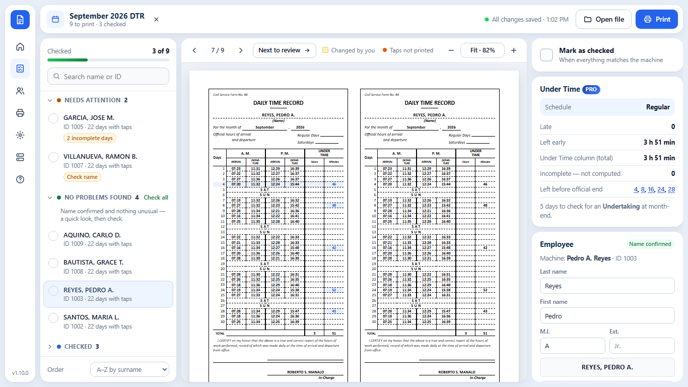
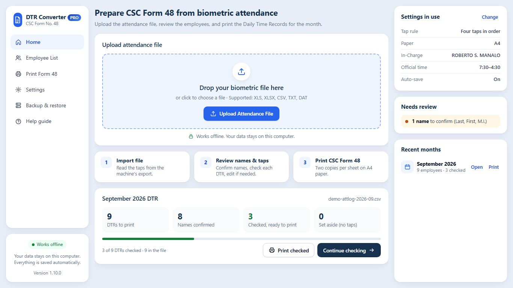

The whole month's DTRs, ready before lunch.
Upload the file from the biometric machine. DTR Converter puts every employee on a CSC Form No. 48 Daily Time Record — checked, named and ready to print, two copies per sheet.
Windows 10 or 11 · latest version · about 12 MB · works offline

From the machine's file to the signed DTR.
No retyping times, no copying names, no counting boxes. You check, it does the paperwork.
Reads the machine's file
Timecard Reports, Attendance Clock Tables and tap logs (Excel, CSV, DAT) — NGTeco, ZKTeco and similar machines.
Faithful CSC Form 48
Every tap in its box, exactly as recorded. Missing taps stay blank, weekends say SAT/SUN, names print LAST, FIRST M.I.
Check only what needs it
DTRs sorted into Needs attention, No problems found and Checked. Staff with no taps are set aside automatically.
Names remembered
Confirm each name once — it fills in every month after, matched by employee number. Import a name list from Excel.
Print ready
Two copies per sheet: A4 cut cards (3.5 × 7.5 in) or long bond. Print one, the checked ones, or everyone — or save as PDF.
Under Time, computed PRO
Enter your official time once. Late arrivals and early departures fill the Under Time column and the TOTAL.

Open it, drop the file, start checking.
- Home shows last month's progress, what needs review, and your recent months.
- Click any box to correct it. Click a day to see exactly what the machine recorded.
- Remarks across a row for HOLIDAY, ON LEAVE or OFFICIAL BUSINESS.
- A built-in Help guide, and updates in one click when you decide.
Three steps, every month.
Upload
Download the attendance file from the biometric machine and drop it into DTR Converter.
Check
Start with Needs attention. Confirm names once, mark each DTR as checked.
Print the checked DTRs on A4 or long bond, two copies per sheet, ready to sign.
The converter, or the converter plus Under Time.
One app. Your license key decides the edition — upgrade any time without reinstalling.
DTR Converter
- Biometric file → CSC Form 48, exactly as recorded
- Checking list, names remembered, inactive staff set aside
- Print A4 cut cards or long bond, or save as PDF
- Backup, Help guide, one-click updates
DTR Converter Pro
- Everything in Standard
- Your official time, one or more schedules
- Under Time and TOTAL filled in — late + early, lunch never counted
- Missing taps flagged, never guessed; Locator Slip / Undertaking days marked Covered
- Undertaking checklist to print at month-end
A key works on one computer. Replacing a laptop? Message us and we move your key, free.
Download, send your name, receive your key.
Steps
- Download DTR Converter (a zip, about 12 MB). Right-click → Extract All, then open DTR Converter.exe.
- Send the payment below with your name and school/office and whether you want Standard or Pro.
- You receive a small .dtrkey file. With internet on, open DTR Converter and choose it. That's it — it works offline from then on.
Windows 10 or 11 (64-bit) with Microsoft Edge or Google Chrome. If Windows says "Windows protected your PC", click More info → Run anyway (first time only).
Pay with
Then send your name, school/office, the edition and a screenshot of the payment to azmarketingservicesbicol@gmail.com or AZ Digital Marketing on Facebook.
Before you download.
Does it work with our biometric machine?
It reads the attendance file most machines export: Timecard Reports (NGTeco and similar), Attendance Clock Tables, and one-row-per-tap logs (ZKTeco attlog .xlsx/.dat, CSV). Not sure? Send us one month's file before you buy and we'll check it.
Do I need internet?
Only to download it and once to activate your key. Converting, checking and printing work offline, and your staff data never leaves your computer.
Does it compute undertime?
Standard copies the times exactly and leaves Under Time blank, as many offices prefer. Pro computes Under Time and the TOTAL from your official time; days with a missing tap are flagged, never guessed, and you mark Locator Slip / Undertaking days as Covered.
Can I correct a DTR?
Yes. Click any box to change it, clear a box to leave it blank, or write a remark across a row. Your change always wins over the machine's time.
What paper does it print on?
A4 with two 3.5 × 7.5 in cut cards per sheet, or long bond (8.5 × 13) with two copies side by side. Print at 100% scale with no margins, or save as PDF.
Is it a subscription?
No. Pay once, use it for good on one computer. Updates are free and install in one click.
What if I change computers?
Make a backup (Settings → Saved data & backup), install DTR Converter on the new computer, and message us — we move your key. Then restore the backup.
QuickCheck — check a class of papers from your phone
For teachers: photograph the answer sheets, get the scores in your DepEd class record and the least-learned competencies.
Car Rental Booking Management — try the live demo
For car rental and self-drive businesses: bookings, availability calendar, fleet, invoices and who still owes you.